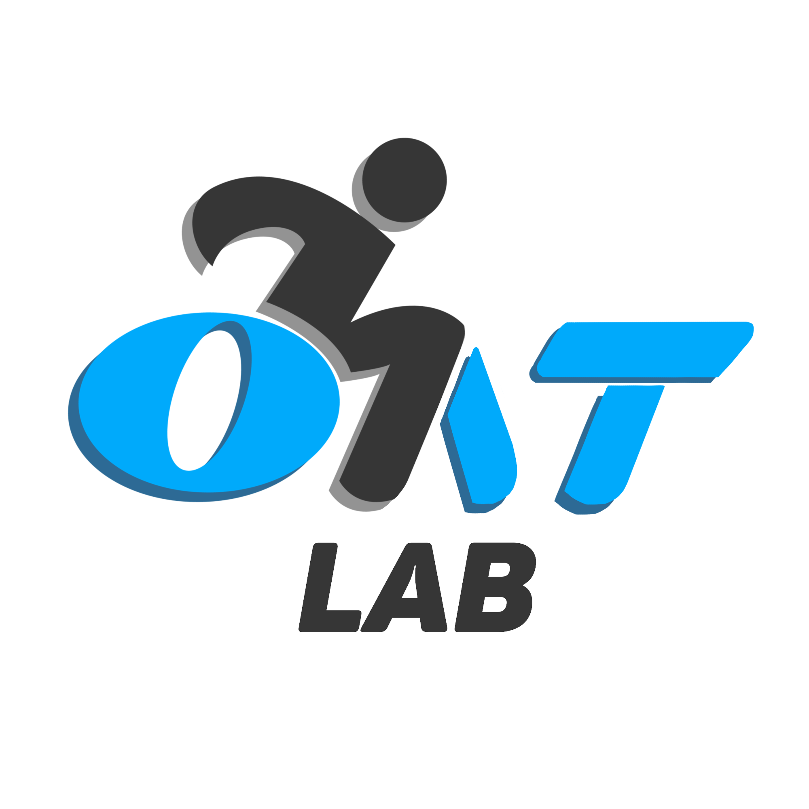
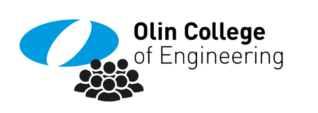
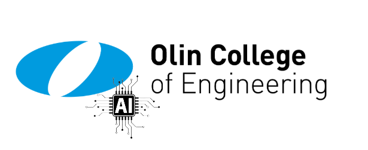

Résumé
See my Résumé
Work Experience
Digital End User Intern
New York Power Authority
June 2026 - Present
Device Interaction & Capabilities
Olin Assistive Technology Lab
January 2025 - Present
- Identified key accessibility challenges that informed core design decisions, by conducting user research and interviews with blind participants.
- Improved interactive conversion software for Braille and text-to-speech outputs through iterative prototyping based on direct user feedback.
- Enhanced usability, efficiency, and accessibility compliance by translating user insights into actionable design improvements.
- Streamlined conversion workflows and integrated software modules by collaborating cross-functionally with designers and developers.
- Enabled scalable accessibility solutions by applying Python and assistive technology tools to automate file conversion.

Paper Reading Student Research Assistant
PIECE Lab
September 2025 - Present
- Investigate how students approach academic literature by examining reading goals across four dimensions: Context, Suitability, Understanding, and Evaluation, to identify effective paper reading strategies in engineering education.
- Develop and apply a structured paper reading framework through qualitative analysis of student reading behaviors, revealing patterns in comprehension, critical evaluation, and knowledge acquisition.
- Collaborate on study design and dissemination, contributing to an accepted paper at FIE 2026.
Research Assistant at Software Engineering Practices & Tools Lab
PIECE Lab
May 2025 - Present
- Uncovered how engineering undergraduates acquire and apply software engineering practices and tools (SEPTs) in STEM projects, by examining the factors affecting utilization and their downstream effects on design, implementation, and maintenance.
- Revealed usage patterns and gaps in software-related knowledge that informed strategies to improve SEPT instruction across engineering disciplines, by performing qualitative analysis of interviews using NVivo.
- Contributed to a SIGCSE 2026 conference paper by collaborating with faculty on study design and dissemination.
Student Member of Olin Circle of Advocates
Franklin W. Olin College of Engineering
April 2025 - May 2025
- Equipped Olin graduates to use AI technologies responsibly and efficiently in their careers, as a participating student in a cooperative AI working group.
- Identified opportunities for ethical, sustainable AI integration that reduced risk, by collaborating with faculty and company representatives.
- Encouraged critical AI literacy across the community by helping establish and maintain project teams focused on implementing AI-driven initiatives.
- Ensured Olin's continued innovation and adaptability despite its small size, by helping build strategic links between the college and outside partners.

Researcher on Artificial Intelligence's Societal Impact
Franklin W. Olin College of Engineering
January 2025 - May 2025
- Assessed AI's evolving role in the workplace by conducting outreach and in-depth interviews with industry professionals.
- Drove informed discussions on AI adoption and impact by synthesizing key insights and presenting findings to the Olin community.
